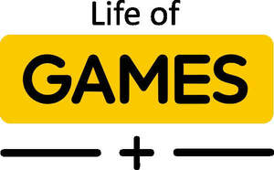

Trade Mark Journal No.2025/033 15 August 2025
UK00004244336 5 August 2025 (28,35)

- Class 28
- Board games; Boards games; Sugoroku board games; Electronic board games; Compendiums of board games; Game boards for trading card games; Question sets for board games; Games; Backgammon games; Checkers games; Arcade games; Dart games; Cards [games]; Tabletop basketball games; Pinball games; Cribbage boards; Dice games; Games consoles; Card games; Interactive gaming chairs for video games; Chess boards; Joysticks for video games; Low-friction game tables for playing hockey games; Table-top games; Mah-jongg games; Marbles for games; Games (Marbles for -); Party games; Parlor games; Sports games; Hockey games; Miniatures for use in games; Draughts [games]; Tabletop games and gambling devices; Marbles for playing games; Korean board games (Yut Nori sets); Skittles [games]; Balls for games; Games (Balls for -); Controllers for computer games; Game consoles; Hand-held consoles for playing video games; Trading cards for games; Paddle ball games; Building games; Balls for playing games; Boule games; Bowls [games]; Dart board cabinets; Parlour games; Electronic dart games; Game cards; Scratch cards for playing lottery games; Electronic games; Video game apparatus, arcade games, and amusement machines ; Video game joysticks; Hand held units for playing video games; Bingo game playing equipment; Counters for games; Video game consoles; Trading card games; Coin-operated games; Chinese chess as games; Memory games; Playing cards and card games; Paddles for playing hockey on game tables; Quiz games; Computer game consoles; Bats for games; Pinball games machines [toys]; Shogi boards; Arcade basketball shooting games; Chinese checkers [games]; Chinese checkers games; Chinese checkers as games; Controllers for game consoles; Go games; Games (Apparatus for -); Apparatus for games; Computer game joysticks ; Hand-held pinball games; Equipment sold as a unit for playing card games; Joysticks being parts of video game consoles; Dart board overlays; Musical games; Billiard game playing equipment; Joysticks for video game machines; Balls for playing boules games; Arcade video game machines; Nets for ball games.
- Class 35
- Online retail services relating to toys; Retail services in relation to games.
Dominic Frazer Ltd